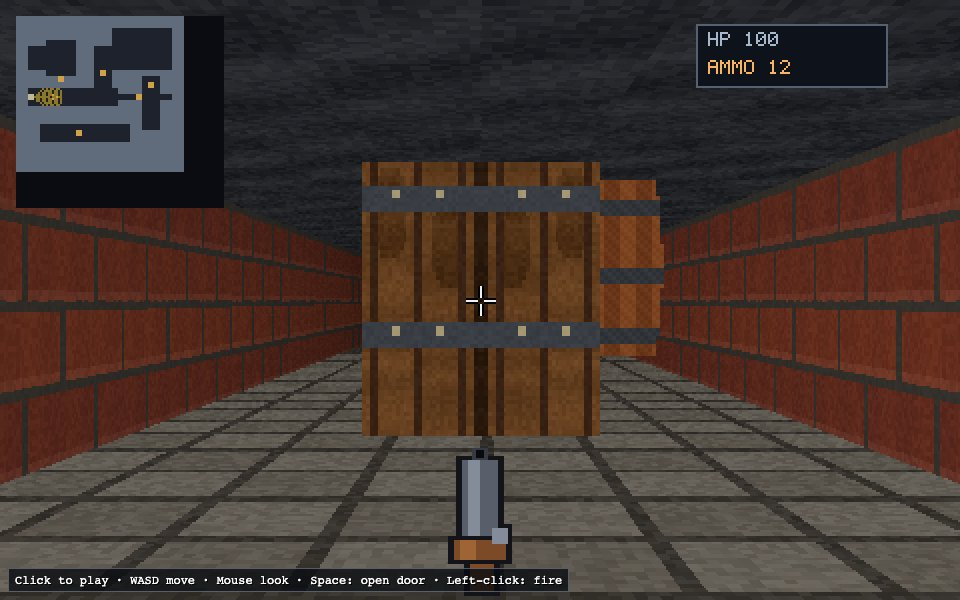

27 November 2026 · Agentic task loop · first-person raycaster
Raycaster Shooter · Hy4-Flash · Sushi 1.8.1 · STQ 2.25 bpw with vision · Tenaz main + Pi · thinking off
Tenaz ended COMPLETE after 2 h 37 min, 51 sessions and 20 task cards: 19 done and 1 dropped by a replan. No session was stopped, three tasks needed a second attempt, and the final review accepted at the first cycle. Played: a working shooter close to the reference in features. The spawn view is the one the brief asks for, walls are straight and shaded, the floor and ceiling are textured, the door slides open and the enemy behind it falls to three hits and stays down. But every wall is brick, as the renderer never picks the stone and wood textures it draws; the spawn door is a lone block the player can walk around; an enemy that reaches the player disappears into the camera and cannot be hit; and health never drops.

What was checked
- Runner final state COMPLETE on 27 November 19:43:45.836 UTC. Bootstrap passed its three steps first time (24 requirements, R11, R22 and R24 manual; 16 tasks). The first replan (016) dropped T006 into T007 and added T017 and T018; the second (027) added T019 and T020; the third (040) added nothing. T004, T012 and T018 were sent back once and accepted at the second attempt; the other 16 tasks passed verify and review first time. The final review (051, 48 turns) played the build in Playwright, viewed its screenshots and accepted at the first cycle, marking R7 (three wall textures) as met.
- Review findings that sent tasks back: T004, a distance-shading check that still passed with the shading removed; T012, a bitmap font with no P, so the health label rendered wrong; T018, a gameplay check that did not assert the absence of a WebGL context. Each was fixed in the second attempt.
- Runner events: 51 sessions, none stopped. The watchdog steered two reviewers on turn pace (011 and 029) and one builder on context pace (032). 021-builder-T009 wrote once outside the project, to a .tenaz/map.md in a parent folder, and was steered back. No reverts, context compactions, provider errors, capacity limits, big outputs or engine retries. No reply stopped at the 16,384-token output limit (the largest was 7,689 tokens); stop reasons are 863 tool use and 52 stop.
- Configuration: Pi 1.6.0 over RPC with the openai-completions provider sushi, thinking off, text and image input, a 131,072-token context window and max_tokens 16,384; Tenaz main ed1c7ba (it reports 0.9.0 (ed1c7ba)), the same binary as the Bonsai run, with defaults: turnBudget 40, turnAbort 1.5, review on, 3 attempts, 90-minute sessions, temperature 0.8, sandbox off. Sushi was detected as a load-api engine; Tenaz never started or stopped it. Launched with --allow-weak-engine; the preflight reported reasoning false (reasoning_chars 0) and cache, tools and vision true, and its image check answered 'red blue'.
- Thinking off: Sushi's own default for Hy4 thinks. The operator's two checks before the run, one request without a reasoning setting and one with reasoning_effort off, returned 65 and 0 reasoning tokens. In the run every request reached Sushi with thinking=false, temp=0.80 and max_tokens=16384. Three replies still carried 6,202 reasoning tokens between them.
- Images: Pi's read tool returned the pixels of PNG files to the model 29 times in 12 sessions, 22 different files. Sushi decoded 586 images over 161 of the matched requests, most of them earlier images carried in the prompt. No session recorded an image refusal.
- Engine metrics: one Sushi 1.8.1 process (banner 'sushi 1.8.1 (MLX 0.32.3)', PID 26900, started by launchd at 17:03:01 UTC) wrote 923 request summaries. Summaries 1 and 2 are the operator's thinking checks, 3 to 8 the preflight. The 915 proxy records match summaries 9 to 923 one to one, in order, contiguously and uniquely by (prompt total, output, cached); no triple repeats in the log. For all 51 sessions the matched summaries' fresh input, cached and output tokens and request counts equal the usage Tenaz journaled. Every request ended at end of sequence; every one used DFly2 drafts.
- Memory: Tenaz's 414 host samples run from start to end. Sushi held 50 to 51 GiB (its ledger: Metal holds about 49.5 GB). Pressure was normal in 397 samples and at warning in 17, from 18:40 UTC, mostly during the final review. Free memory stayed between 0.11 and 1.29 GiB, wired memory between 51.5 and 55.3 GiB, swap in use between 16.5 and 19.6 GiB, and 3.0 GiB were swapped in.
- `verify --all` on a clean clone of the final commit 8b53fa3 with the run's node_modules: 20 of 20 passed in 7.4 s, as Tenaz recorded. The checks start headless Chromium with --use-mock-keychain and drive the built page, including movement, the door, three-hit kills, the HUD and the minimap; they did not catch that every wall uses the brick texture.
- Played by Claude in the desktop app's Chromium, against `vite preview` of the run's build. Spawn faces the planked door 4 cells ahead with a barrel partly hidden at its right edge; stone-tile floor and textured ceiling; walls straight with no fisheye, shaded by side and darker with distance; WASD moves with collision and sliding; Space opens the door within 2 cells and it slides open; the enemy behind it walks toward the player; left click fires with a muzzle flash and uses ammo; the hit enemy flashes, falls on the third hit and stays down. Barrels and pillars are sorted and clipped; minimap with view cone, HUD, controls hint, crosshair and gun all show. Mouse turning was tested through the game's dispatchMouse hook, as the pane gives no pointer lock.
- Faults in play: every wall is brick. textures.js draws brick, stone and wood, but render.js passes pickTexture a texture set with no north or east keys, so it always falls back to brick; only the door has its own planked texture. The spawn door at (6,13) is a single block in a hall three cells wide, so the player can walk around it while it is closed. An enemy that reaches the player moves into the player's cell, vanishes inside the camera and cannot be hit (shots register at distance 0) until the player steps back. Health never drops; DONE.md says so.
- Public artifact: `vite build --base ./` of the final commit 8b53fa3 in the clean clone; its JavaScript bundle is byte-identical to the run's own dist (built after the run), and its index.html differs only in the script path (./assets in place of /assets). Plain canvas code with no runtime dependencies. Screenshot: a fresh headless capture of the published build's spawn view at 960x600, with no page errors.
Limits of this evidence
Completion is the runner outcome. Hy4-Flash as the Sushi STQ 2.25 bpw pack on Sushi 1.8.1, thinking off, temperature 0.8, Pi 1.6.0 and the same Tenaz main ed1c7ba binary as the Ternary Bonsai run: as close as possible to the Qwen 3.8 27B pi-adapted run 2 of 19 November, which finished COMPLETE in 2 h 3 min with 45 checks and a game that passed all eight Must have items. This run took 2 h 37 min with 915 requests against 439 and 20 checks, and built a game close to the reference in features, but with brick on every wall and a spawn door that can be walked around. Against Bonsai (COMPLETE_WITH_GAPS, 944 requests, walls overdrawn) it finished cleanly with every session settled. It decodes slower (median 38.2 against 52.0 and 105.8 tok/s), and Sushi held about 50 GiB, with memory pressure at the warning level in 17 of 414 samples. Model, engine and engine version differ from the reference, so the result cannot be put on one cause. One run.
Configuration
The model, serving engine and agent used for this execution.
| Field | Value | Detail |
|---|---|---|
| Model · primary | Hy4-Flash · primary · reasoning off (thinking off, as in the reference run): Tenaz and Pi sent thinking off on every request, and Sushi logged every request of the run with thinking=false. Sushi's own default for Hy4 thinks. The preflight saw no reasoning, but three replies carried 6,202 reasoning tokens between them. Hy4 had not run under Tenaz with thinking off before. | Sushi STQ 2.25 bpw (routed experts EXL3) |
| Checkpoint · primary | Hy4-Flash-Sushi-STQ-2.25bpw | primary model artifact · revision capture-cf5ac35088b7 |
| Runtime | Sushi 1.8.1 · MLX 0.32.3; the log banner reads 'sushi 1.8.1 (MLX 0.32.3)'. Sushi updated itself from 1.8.0 after the Hy4 Pocket Roads run. · One Sushi server process for the whole run (PID 26900), started at 17:03:01 UTC on 27 November by the workstation's Raycast launcher through launchd, before init, and stopped after the run: --ctx-size 262144, --max-tokens 16384, --metrics, no --ssd-budget-gb (Sushi's RAM default: every routed expert resident). Everything else Sushi's default for Hy4: 8-bit KV cache, 4096-token prefill chunks, prefix cache on SSD only (20 GB), DFly2 drafts at depth 1 to 6, vision on, one request at a time. Temperature 0.8 pinned through Tenaz's proxy (Hy4's default is 0.9; every run request logged temp=0.80), top-p 1.0 and no top-k from the pack. Tenaz used it as a load-api engine through its proxy, with a 131,072-token context window of its own. mode | inference engine and exact build |
| Harness | Pi coding agent over RPC driven by Tenaz main ed1c7ba (it reports 0.9.0 (ed1c7ba)) 1.6.0 | the agent or client that drove the run |
| Runner | Tenaz main · build ed1c7ba after 0.9.0 (unreleased) | open-source runner, github.com/aartiles/tenaz · how the runner evolved |
| Hardware | Apple MacBook Pro · 64 GB unified memory | hardware recorded for this execution |
| Workload | Raycaster Shooter · revision 1 | One-shot raycaster brief by @ddalcu, as posted by @Beamsters1, used verbatim as the Tenaz brief (sha256 5c3cf17c..., the same file as the other Raycaster runs); empty project, and the local model wrote its own spec, verify and task plan. Per-session context budget 85,196 tokens (0.65 of 131,072). Set up as close as possible to the Qwen 3.8 27B pi-adapted run 2 of 19 November and the Ternary Bonsai repeat of 27 November: same brief, Pi, thinking off, temperature 0.8, vision, Tenaz defaults, sandbox off, --allow-weak-engine, and the same Tenaz binary as Bonsai. Model, engine, engine version and the way the engine was started differ. prompt_tokens counts every request's full prompt, cached or not. No operator action after launch. |
| Context window | 262,144 tokens | maximum context configured for the serving runtime |
| Repetitions | 1 | executions recorded for this workload; one means an indicative result, not an estimate |
Inference measurements
Engine-side rates for this run. Each figure states its own statistic; figures from different runs are not interchangeable.
| Metric | Value | Definition |
|---|---|---|
| TTFT · median | 1.084 s | Median engine-reported TTFT across matched requests, from Sushi's per-request metrics as Tenaz's proxy recorded them. · n=915 · Mean 2.916 s, 90th percentile 7.96 s, maximum 43.6 s; 76 requests over 10 s. Includes the run's cache mix and image prefill; not a prefill rate. |
| Prefill · median | 294.7 tok/s | Median of Sushi's per-request prefill rate across matched requests, as Sushi reports it, cached input included. · n=915 |
| Decode · per-request median | 38.2 tok/s | Median of Sushi's per-request decode rate across matched requests. · n=915 · 10th percentile 30.6, 90th percentile 46.4 (linear interpolation), range 24.3 to 58.6. Median 39.6 below 16K prompt tokens (296 requests), 37.8 from 16K to 32K (486), 37.0 from 32K to 64K (133); no prompt reached 64K. |
| Decode · output-weighted | 39.0967 tok/s | Total output tokens divided by the sum of each request's output tokens over its decode rate. · n=915 |
| Draft acceptance | 81.0288 % | Accepted DFly2 draft tokens divided by drafted tokens, from the Sushi spec-stats line of each matched request. · n=915 · 146,616 accepted of 180,943 drafted. DFly2, not MTP. |
| Host wired memory · median | 52.335 GiB | Median host wired memory across Tenaz's host samples from start to end of the run. · n=414 · 53.18 GiB at the first sample, maximum 55.27 GiB. Host-wide, includes every process. |
| Server process memory · peak | 51 GiB | Largest Sushi process memory in Tenaz's host samples. · n=414 · 50.0 GiB in most samples, Sushi's own process (PID 26900). |
| Swapped in during the run | 3.011 GiB | Sum of swap-in deltas across Tenaz's host memory samples (197,353 pages of 16 KiB); host-wide swap I/O, not resident memory. · n=414 · Memory pressure normal in 397 samples and at warning in 17, from 18:40 UTC, most of them in the final review. Swap in use between 16.49 and 19.59 GiB, 17.53 GiB at the first sample. |
| Swapped out during the run | 5.018 GiB | Sum of swap-out deltas across Tenaz's host memory samples. · n=414 |
| Free memory · sampled minimum | 0.11 GiB | Lowest free memory in Tenaz's host samples. · n=414 · Median 0.16 GiB. The operator read 7 to 13% free in macOS's own memory figure during the run. |
Agent session counters
Agent-wide usage totals. These include reasoning, tool calls and waiting, and are not model decode speed.
| Metric | Value | Definition |
|---|---|---|
| Run elapsed | 157.4 min | Session 001 start after the preflight (2026-11-27T17:06:22.489Z) to COMPLETE (2026-11-27T19:43:45.836Z); includes tools, checks and reviews. · n=1 · 2 h 37 min 23.3 s; no pauses. `tenaz run` was launched at 17:06:13 UTC. |
| Agent sessions | 51 sessions | All harness sessions: 3 bootstrap, 22 builder, 22 reviewer, 3 replan and 1 final reviewer. · n=1 |
| Sessions ended early | 0 sessions | Sessions with ok=false. · n=51 |
| Operator interventions | 0 actions | No pauses, relaunches, configuration changes or edits after the first session started. · n=1 · One launch. Before it, the operator sent two small requests to Sushi to check thinking; they are not part of the run. |
| Model responses | 915 responses | All proxy request records of this run: 863 tool use and 52 stop. · n=1 · None empty, aborted or ended in an error. |
| Matched model requests | 915 requests | Proxy records matched one to one, in order and uniquely to Sushi summaries by (prompt total, output, cached). · n=915 · Sushi summaries 1 and 2 (the operator's thinking checks) and 3 to 8 (the preflight) are excluded; every other summary of the process is matched, summaries 9 to 923. |
| Tool calls | 1,052 calls | Pi tool calls across all 51 sessions' RPC logs (equal to the journal's sum). · n=51 |
| Tool errors | 60 errors | Pi tool calls that ended with isError, counted in the sessions' RPC logs. · n=1052 · 49 shell commands, 9 file reads and 2 edits; not a count of malformed tool calls. |
| Image tool calls | 29 calls | Pi read calls that returned the pixels of a PNG file to the model. · n=1052 · In 12 of the 51 sessions, 22 different files: the project's screenshots, contact sheets and crops the model made of its own game. |
| Context compactions | 0 compactions | Compaction count across all session records. · n=51 |
| Responses stopped at the output limit | 0 responses | Replies that stopped at the 16,384-token output limit. · n=915 · Every reply ended at end of sequence in the Sushi log; the largest had 7,689 tokens. |
Context and token counters
Token totals as reported by the harness or engine. Cached and cumulative figures are not additive with fresh input.
| Metric | Value | Definition |
|---|---|---|
| Maximum prompt context | 58,788 tokens | Largest prompt across matched requests; not the configured server window. · n=915 · The last request of 051-final-reviewer, with 11 images in its prompt. |
| Cumulative input | 20,459,112 tokens | Sum of total prompt tokens across matched requests, including repeatedly reused context; not unique input. · n=915 |
| Cached input | 19,264,370 tokens | Sum of prompt tokens Sushi restored from its SSD prefix cache for matched requests. · n=915 |
| Fresh input | 1,194,742 tokens | Total prompt minus cached prompt tokens across matched requests. · n=915 |
| Output tokens | 238,086 tokens | Sum of output tokens across matched requests, reasoning included. · n=915 |
| of which reasoning output | 6,202 tokens | Reasoning tokens in the proxy records, part of the output tokens. · n=915 · All in three replies (3,542 in 019-builder-T008, 1,327 in 032-builder-T020, 1,333 in 048-reviewer-T018), although Sushi logged those requests, like every other, with thinking=false. |
| Prompt-cache token share | 94.1603 % | Cached prompt tokens divided by total prompt tokens, weighted by tokens across matched requests. · n=915 |
Recorded check counters
Counts from the checks recorded with this run.
| Metric | Value | Definition |
|---|---|---|
| Tasks completed | 19 tasks | Final task cards marked done; T006 was dropped by the first replan, its work moved to T007. · n=20 |
| Reviews returning changes | 3 reviews | Task review verdicts returning CHANGES: the first reviews of T004, T012 and T018. The other 19 task reviews and the one final review returned ACCEPT. · n=23 |
| Project checks passing | 20 checks | Checks passing in `verify --all` on a clean clone of the final commit after the run; Tenaz recorded the same 20. · n=20 · Model-written checks, not an independent acceptance suite. |
Request records & provenance
915 numeric request records in proxy order, each matched one to one to a Sushi summary by total prompt, output and cached tokens. Prefill and decode rates and the DFly2 spec-stats (mtp_* fields: attempts, accepts and drafted, with acceptance as accepts over drafted) come from Sushi's log; TTFT from Sushi's per-request metrics as Tenaz's proxy recorded them. The operator's thinking checks and the preflight are excluded. No prompts, images, tool results, session identifiers or local paths are included.
Run ID: 2026-11-27-hy4-flash-sushi-v181-225bpw-tenaz-main-ed1c7ba-pi-raycaster-shooter
One execution, with checks transcribed from the retained record. A completed session is not a quality score. Measurement method · All runs